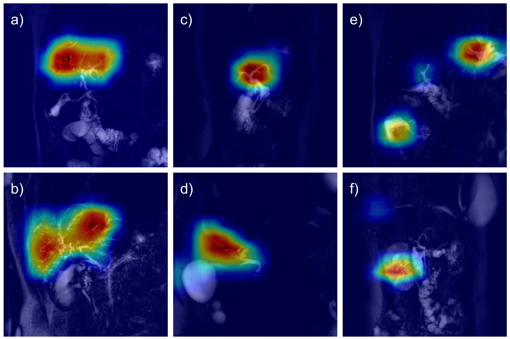
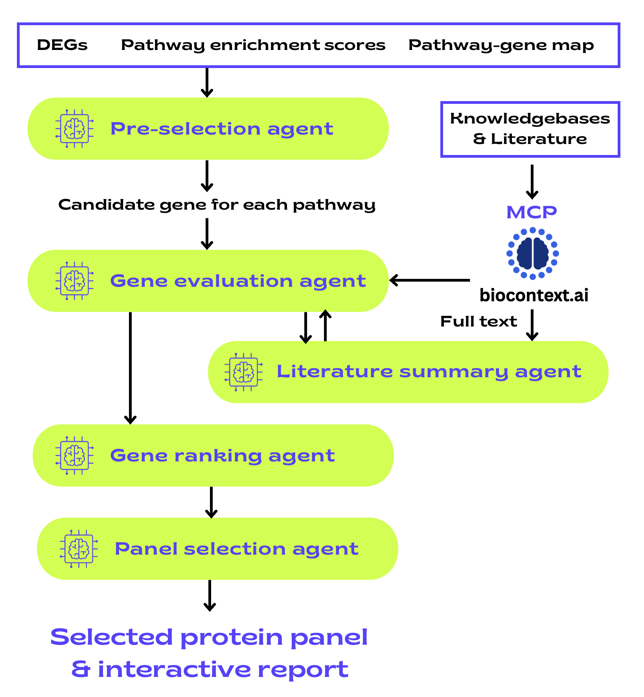
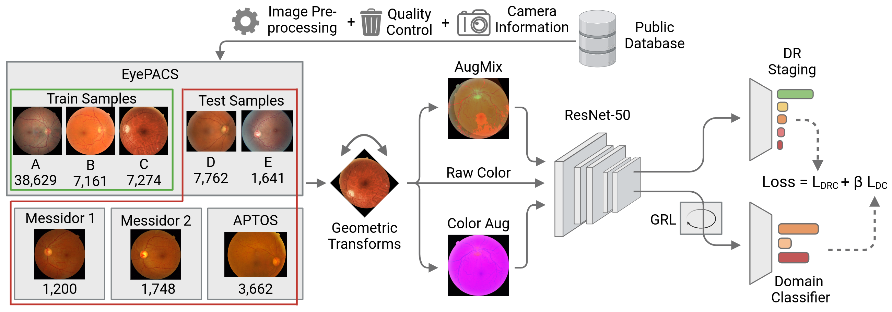
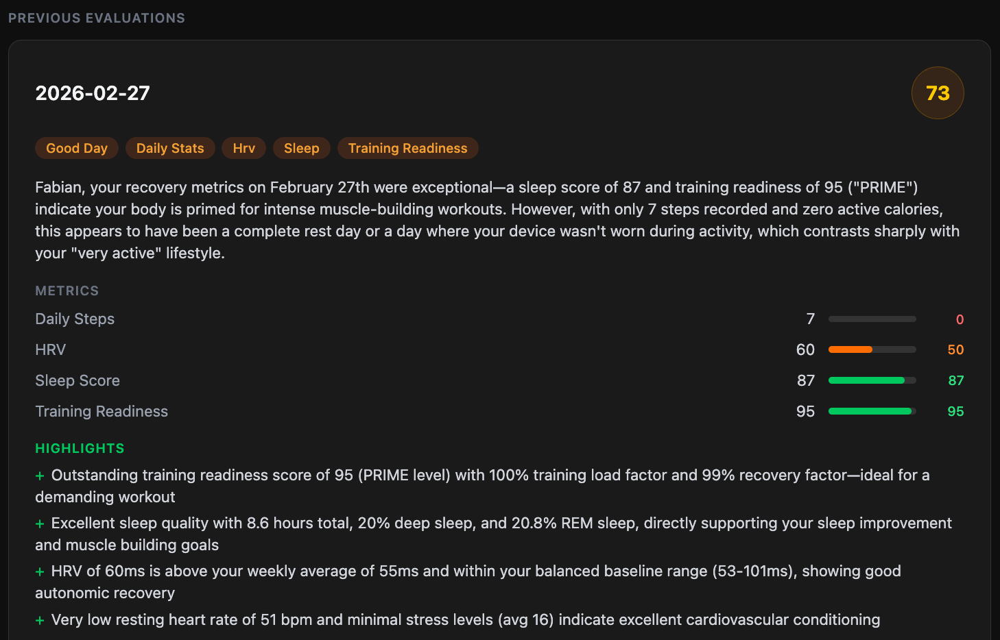
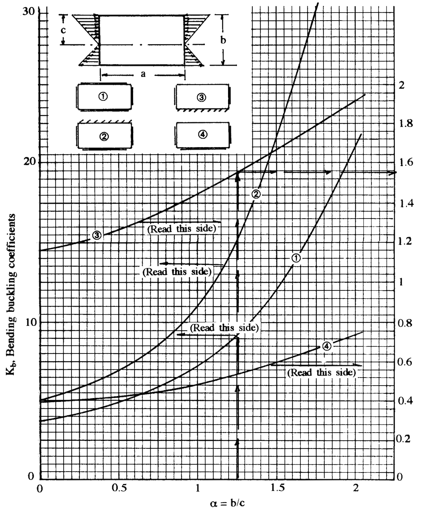
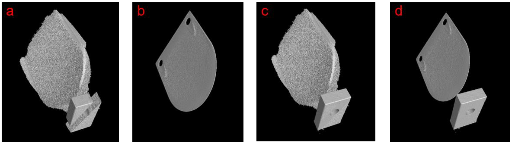
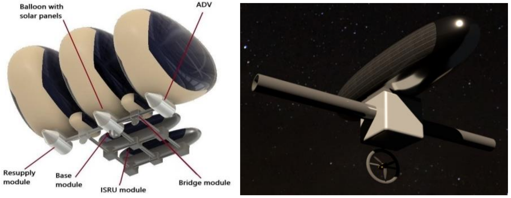

Selected Projects
PCAI: Prostate Cancer Aggressiveness Index

Built a production-grade AI system for automated prostate cancer survival and risk assessment from histopathological biopsy images. PCAI is built from a multi-national dataset consisting of 83,864 images from 25,591 patients with up to 20 years of patient follow-up and is the first model to achieve a more accurate risk prediction than the current gold standard of the expert-assigned ISUP grade. The model utilizes attention-based multiple-instance learning, self-attention and domain-adversarial training to generalize to five unseen external cohorts from different imaging devices and clinics. Interpretability is provided by attention heatmaps and an additional cancer detection module. A conformal-prediction-based uncertainty estimation module calculates an additonal confidence score for each risk prediction. PCAI is officially certified by the Swedish healthcare authority (IVO) and actively used in clinical practice.
DeePSC: Automated Diagnosis of Primary Sclerosing Cholangitis
Developed attention-based multi-view CNN model DeePSC for automated diagnosis of Primary Sclerosing Cholangitis from 2D MR cholangiopancreatography images. DeePSC achieves above expert-level accuracy on multiple unseen datasets and generalizes to different imaging devices outside of its training distribution. GradCAM visualizations allow for interpretability of the model's decisions. Published in Radiology: Artificial Intelligence. Awarded with the DGVS "Innovation Award for Digital Gastroenterology".
Antibody-AI (ABAI): Agentic Spatial Proteomics Marker Selection
AI-powered research tool for identifying optimal protein markers in spatial proteomics experiments. Uses multi-agent LLM workflow to analyze pathway activity, evaluate antibody availability, and rank candidates based on literature evidence and technical feasibility.
TenderFetcher: AI-Powered Tender Analysis System
Production-grade agentic AI system that automates tender analysis and procurement processes for management consulting firms. Leverages web-scraping architecture to extract tenders from multiple European databases, processes them with structured LLM outputs for intelligent categorization, and uses vector embeddings to match opportunities with past project experience. Deploys as a containerized Flask API on Google Cloud Run with SharePoint integration for enterprise workflow automation.
VibeSliding: Agentic Multimodal PowerPoint Copilot
An LLM-powered agentic assistant that transforms presentation creation through natural language commands and AI-driven automation, directly integrated into Microsoft PowerPoint as an add-in. The system features a conversational agent written in TypeScript that consumes the PowerPoint JavaScript API. It is capable of understanding complex slide editing instructions, visual slide analysis using multimodal vision models, and sophisticated text processing that semantically preserves text and content formatting.
RADR: Robust Diabetic Retinopathy Classification
Supervision of Master's thesis for development of a domain-adversarial deep learning framework for automated diabetic retinopathy severity classification that achieves state-of-the-art performance across different imaging devices and external cohorts. Published and presented at Medical Imaging with Deep Learning (MIDL) 2024.
Railway Track Monitoring & Analysis Platform
Developed a comprehensive full-stack analytics platform for railway infrastructure monitoring, processing real-time sensor data from specialized measurement trains to analyze track roughness, noise emissions, and damage patterns. The system features automated data pipelines, downstream analyses, interactive visualization dashboards, and generates regulatory compliance reports for railway authorities. Built for handling large-scale geospatial time-series data from extensive railway networks.
Personal Health Agent: AI-Powered Health Data Analysis & Coaching
A full-stack AI health assistant that connects to wearable device data, calendar, and biomedical literature to provide personalized, evidence-based health insights. The system features an agentic LLM backend that autonomously retrieves and cross-references Garmin health metrics, Google Calendar schedules, and scientific research via Model Context Protocol (MCP) servers. Health data is persistently stored for longitudinal trend analysis, and a day evaluation engine combines deterministic quantitative scoring with LLM-generated qualitative assessments tailored to individual health goals. Accessible as a mobile-optimized progressive web app.
AI Engineering Assistant for Airframe Stress Analysis
An AI-powered multi-modal engineering assistant that autonomously answers complex structural analysis questions by reasoning over technical reference literature. The system deeply ingests textbooks using vision language models, building a searchable knowledge base of theory, equations, charts, and diagrams. When given an engineering question, the agent searches for relevant material, visually inspects charts and figures using custom image interpretation tools, reads precise data points from graphs, and performs calculations, mirroring the human engineering process. All answers are grounded and referenced in source material for full traceability.
Kidney Glomeruli Classification

Developed deep learning pipeline for automated classification of glomeruli from multichannel fluorescence microscopy images to distinguish healthy vs. diseased kidney tissue and wild-type vs. knockout mouse genotypes. The system combines computer vision-based feature extraction with convolutional neural networks for downstream analysis. Integrates Cellpose segmentations and GradCAM visualizations for model interpretability.
Decidalo MCP Server: Semantic Access to Enterprise Data
Decidalo MCP Server is a comprehensive Model Context Protocol (MCP) server that enables AI assistants to perform semantic search and retrieval-augmented generation (RAG) over an internal business data platform. The system automatically ingests data records from Decidalo APIs, converts them into vector embeddings, and stores them in Qdrant vector databases for efficient similarity search. Deployed as a containerized service with GCP authentication proxy, it provides secure and semantic access to structured business intelligence data.
DESTINY⁺ Dust Analyser Data Simulator
My Master's thesis on developing an FPGA-based simulator for the DESTINY⁺ Dust Analyser sensor data. Built in VHDL on Xilinx Zynq-7020 SoC with custom trigger logic for detecting interstellar dust particle impacts. Enables testing of space mission instrumentation without requiring complex dust accelerator setups. DESTINY⁺ is a JAXA technology demonstration mission to asteroid Phaethon, exploring cosmic dust and demonstrating low-cost deep space exploration technologies.
Image credit: JAXA
3D-Segmentation of Multi-Material CT-Scans with Deep Learning
Developed CNN-based deep learning models for automated 3D segmentation of multi-material objects in computed tomography scans. Created custom training dataset through physical CT scanning of multi-material test objects to capture real-world artifacts including beam hardening and cone beam effects. Aims to overcome limitations of traditional thresholding methods that fail in artifact-affected regions and enable reliable multi-material segmentation for industrial quality control applications.
Fortuna: A Human and Robotic Exploration Mission to Venus
Conceptual design of a long-term crewed mission to Venus as part of the Space Station Design Workshop. Led the electrical power system design for a multidisciplinary team project exploring human survival in Venus's harsh atmosphere. Proposed innovative solutions for balloon-based habitation at 70km altitude, surface robotic exploration, and in-situ resource utilization (ISRU) technologies.